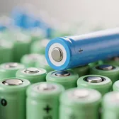
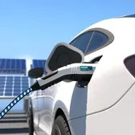
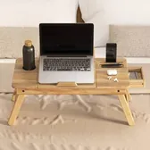

Home assignment · Taboola News · 48 hours
Lock Screen Widgets.
Role
Product Design Team Lead
Scope
Research, UX Strategy, Wireframes, UI Design, Design System, Growth & Measurement
Taboola News reaches millions of lock screens that nobody chose to fill. My answer is a rule rather than a layout: one to three widgets, set by how busy the screen is and how the person's day looks, and a news brief that ends, so coming back is a choice.

countries
monthly active users*
languages
* As of March 2025, based on data reported by OEM partners. Source: Taboola investor presentation.
Assumptions. Taboola and its OEM partners can read notification load and when a person uses their phone. Weather and news are available on every partner. Sponsored stories can run inside the brief, as they do across Taboola's network.
the lock screen.
The placement is guaranteed. The attention is not. The partnership puts Taboola News on the lock screen, but only value earns the look. The more precisely a widget fits the person and the moment, the less it feels like something added to the phone, and the more it feels like a feature of the phone they chose.
Where I started
I started wide, with layouts that ignored the mockup, then came back to it. Taboola's zone above the unlock hint held up. What it needed was a rule, not a new layout.
Calm, but one fixed slot cannot serve different people at different moments.
Sketch: Claude
Nothing leads, and four tiles compete with the notifications above them.
Sketch: Claude
Lock-screen swipes already mean unlock and camera, and the second card is rarely seen.
Sketch: Claude
Taboola's zone, made adaptive: one widget leads, others shrink to a value, the count follows the screen.
Sketch: Claude
One to Three, Never Fixed
One widget takes focus, and up to two others shrink to a single value above it. How many appear, and which ones, follows each person's own day: their notifications, their routines, what they open and when.
Every Widget Earns the Look
The glance must be worth something on its own: for weather the answer, for a game the invitation. It updates only when something changes. A chevron appears only where a tap opens real detail, like hourly rain or the full brief.
Same Skeleton, Their Skin
Taboola keeps what builds trust: structure, behavior, sponsored labels. OEM partners own what builds recognition: color, type, icons. The user's phone adapts: contrast against their wallpaper, dark or light, language and reading direction, text size, accessibility. One token set: a new partner is a theme.
 today
today
the rule.
Two things decide what the lock screen shows: how busy it already is, and what the day holds. Left to right, only the notifications change. Top to bottom, only the weather.
0 to 2 notifications
Many notifications
Pleasant day


Rain


Weather Leads When It Matters
Rain before you leave, or tomorrow's forecast late in the evening: when the weather changes someone's plans, it takes the full width. On an ordinary day it stays a single number, because there is nothing to warn about.
Play Waits for Free Time
Trivia appears when this person is usually free: a quiet screen, after work, a lunch break, or only on weekends if that is when they play. At the wrong moment a game is noise. At the right one, it is a reason to come back.
Stepping Back Builds Trust
When notifications pile up, we shrink to one number. The user never has to fight us for their own screen, so there is no reason to switch us off, and the space stays ours for the moments when it pays for everyone.
one system, many brands.
Taboola News ships under many brands, in many languages, on wallpapers nobody picks for us. The structure has to hold through all of it, so every difference below is a token, not a new design.
Taboola's structure in one partner's type, color and corners.

why the feed.
Before choosing a widget, I wanted both sides of this screen: what Taboola is betting on, and what the people holding the phone say about it. They don't agree yet, and the choice had to work for both.
What I looked at
Taboola investor presentation
Taboola Is Betting on Play
Gaming and interactive content are on the roadmap, with Taboola's own numbers behind them: 33% more daily clicks, a 6.6x click-through rate on game wallpapers, and 48% of carousel players coming back. Sponsored content on the lock screen is next.
Google Play, Live lock screen
Users Never Asked for It
1.7 stars across more than 8,000 reviews and 10 million downloads. The recurring complaint is not the content but the lack of choice: "I did not want this... yet can't get rid of it." Some report it reinstalling after updates.
YouTube tutorials
People Search for the Exit
Short videos walk through removing Taboola News from an Android lock screen, device by device. Their existence is a finding in itself: for some users, the first thing they do with the product is look for the way out.
What I learned
Right now the lock screen has a captive audience.
The work is to turn it into a satisfied one:
content that shows up because it is worth something to this person, so good that where it comes from stops being the question.
How it led to the choice
Two strong candidates, a news brief and a branded game, and the question a manager has to ask: which one brings value fastest and starts teaching us something?
| Criterion | News brief Chosen | Branded game |
|---|---|---|
| Built on | Publishers, content and recommendations Taboola already runs | A brand deal, new content and legal sign-off first |
| What it teaches us | When, how deep and what each person reads | Whether branded play holds attention |
| Where it goes next | Adapts per reader: a few focused stories, or tabs and categories | One campaign at a time |
| Risk to trust | Low: it is the product's core promise | Higher: closer to advertising for a wary user |
I chose what we learn from fastest, not what looks most impressive.
The game comes next, not instead. Once the feed shows when each person is free and what they care about, a brand quiz lands in exactly those moments, and Taboola's own gaming numbers make the case for it.
Engaging, here, means coming back tomorrow, not clicking today. A daily brief builds that habit, and the habit is what every other widget, games included, will run on.
from glance to habit.
The brief is short on purpose. It opens from one tap, reads in any order or straight through, and then it ends. Coming back is built from continuity, not from notifications.

Your Daily News Brief
Startup raises $40M to recycle batteries
Heatwave eases by the weekend
You're up to date
A brief lives for a few hours around this person's routine. Opened and closed without reading counts as "not now": the card steps back at once, and if it keeps happening, the brief moves to another time of day.
a brief that ends well.
Your Daily News Brief
10 stories · 5 publishers

You're up
to date
More on Tech


How was today's brief?
more UI examples.
The same rule, beyond the brief: when a team someone follows is playing, the match takes the focus, the way rain does.
Okafor curls it in
from 25 yards
Match stats Updated live
Around the match
Scroll inside
Highlights 3 goals
Final stats
After the match
Scroll inside
Play, when there's time.
The same rule brings a game when this person is usually free: a daily Guess the movie set, made with a partner brand.
Stuck? Flip a card. Each one costs a point.
Which movie is it?
4 out of 5 movies
Your final score
Presented with Disney
the plan.
Everything here serves one idea: revenue is the result of the habit, not a goal that competes with it.
Returning users, engagement, personalization
Coming Back by Choice
- On their clock. The brief arrives when this person reads: every morning, every evening, or only on Saturday.
- At their depth. Skimmers get three to five focused stories. Deep readers get tabs and topics.
- From where they stopped. "Continue" holds their place, and "You're up to date" gives the day an end worth returning to.
- In their words. "More like this" and "Less like this" on any story, the same kind of signal Taboola already reads from likes.
Monetization
Paid For, Never Pushed
- Inside the brief, not on top of it. One sponsored story in the brief and one in "More on", same format, clearly labeled.
- Every read is traffic to a publisher, the open-web model Taboola is built on.
- Guardrails. Never on a busy lock screen, never first in the brief, never more than one per place, always relevant to the reader's topics.
- Next. A brand quiz partnership, labeled as one.
Metrics and validation
Habit First, Revenue Follows
- North star: weekly returning readers, people who open the brief on 3 of 7 days. It measures "choose to come back" directly.
- Guardrail: lock-screen opt-out rate. If it rises, something is broken, even if clicks rise with it.
- Before launch. A two-second glance test with 5 to 8 people ("what did you see?"), a usability test on the prototype, then 1% to 5% of one OEM partner's users in one market, against a holdout group.
- Hypothetical, for illustration. After two weeks, opens are high but only 30% finish. Next step: cut the brief to five stories and test again.
AI for speed, judgment by hand.
The brief asked which AI tools I used, for what, and what I kept for myself. The short version: AI made this faster, and the calls on this page are mine.
With AI
Claude (Cowork). A thinking partner through the brief, desk research on Taboola News, a running notes file, and the build of this page: the live partner widget, the flow wireframes, compressed media. It drafted copy; I rewrote or approved every line.
Figma Make. One lock-screen attempt. It knew when to add context, but not what should take priority. The rain widget on this page is my correction.
By me
Research on the ground: I found and watched Taboola's investor presentation and the "how to remove Taboola News" videos.
The product calls: the stance, the one-to-three rule and its priorities, and choosing the feed over the game.
The design: the lock-screen states in Figma, and the art direction of the two high-fidelity screens, which Claude built from my wireframes.